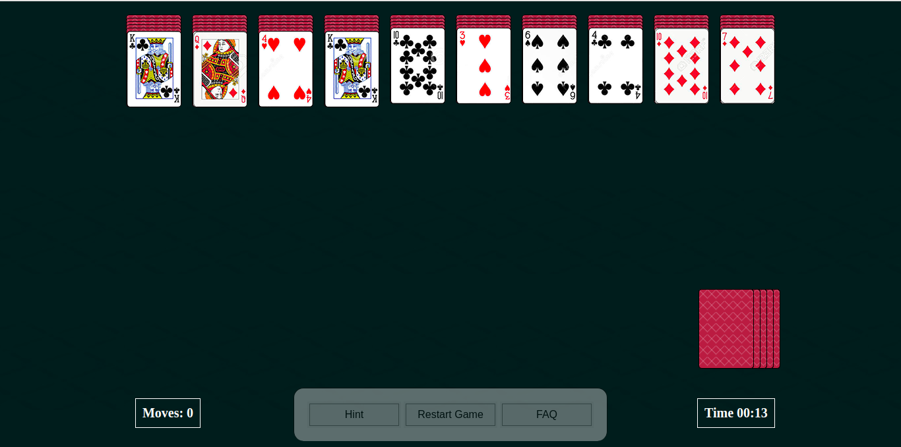
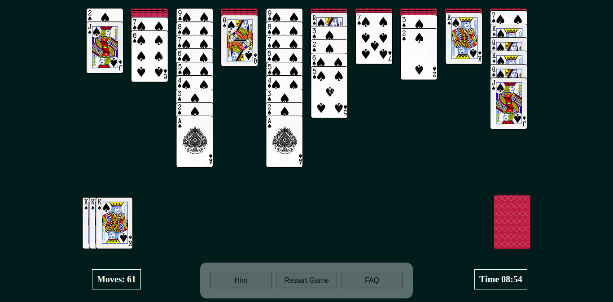
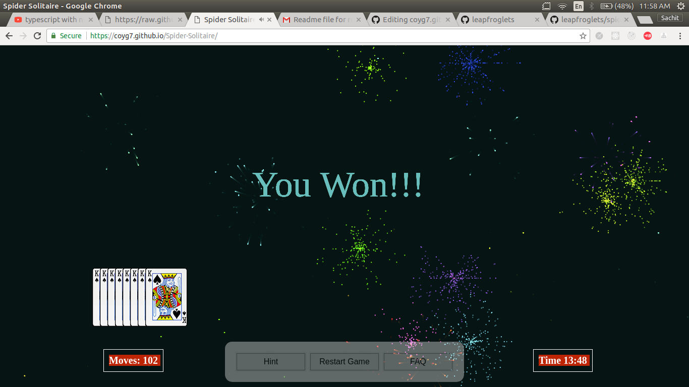

How to Play Spider Solitaire
A clear, illustrated guide to free Spider Solitaire on SpiderImp—no download required. Prefer a quick start? Open the game and use in-game FAQ anytime.
Choose a mode and deal the tableau
Spider uses two decks (104 cards) dealt into ten columns. At the start, 54 cards fill the tableau (some columns get six cards, others five); the face-up card is on top of each column. The rest stay in the Deal stock (top-left). When you uncover a face-down card, it flips face-up automatically.

Pick 1 suit, 2 suits, or 4 suits, then Play for a random deal or Daily Challenge for today’s shared puzzle. See the difficulty comparison and Daily Challenge guide.
Move cards and build same-suit runs
- Place a card on the next-higher rank (suit does not matter for a single card).
- Only a same-suit descending stack moves together as a group.
- An empty column accepts any card or valid same-suit run—guard empties; they are powerful.
- Drag with the mouse, or click the source card then click the target column. On touch devices, tap or drag.

Goal: assemble eight King → Ace sequences of the same suit. Each finished run moves to the Completed area at the top.
Deal from the stock (safely)
When every column has at least one card, click the Deal pile to deal one card onto each of the ten columns. You cannot deal while any column is empty— fill empties first. Avoid dealing until you have no useful tableau moves.

Win, score, and helpers
Clear all eight runs to win. SpiderImp ranks finishes by moves first (fewer is better), then by time. Use Undo, Hint, Pause (P), and Restart from the controls. Unfinished games can be resumed from the main menu. Scores and stats stay in your browser (local storage)—see Privacy.
Shortcuts: Z Undo · H Hint · D / Space Deal · P Pause · Esc close panels. The top bar Pause button freezes the timer.